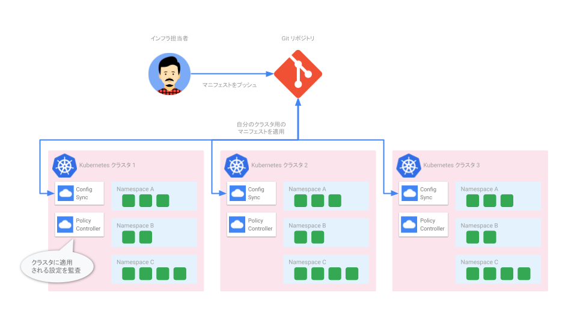
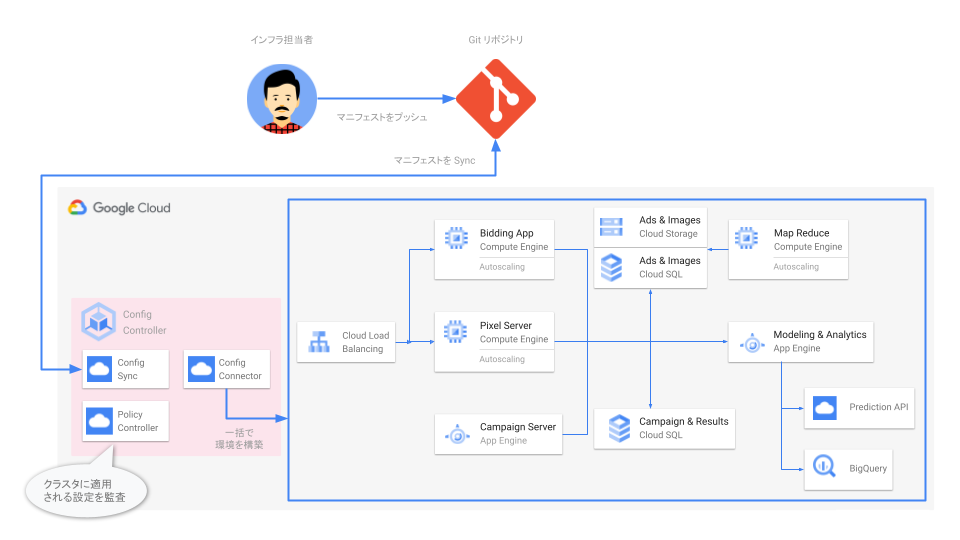
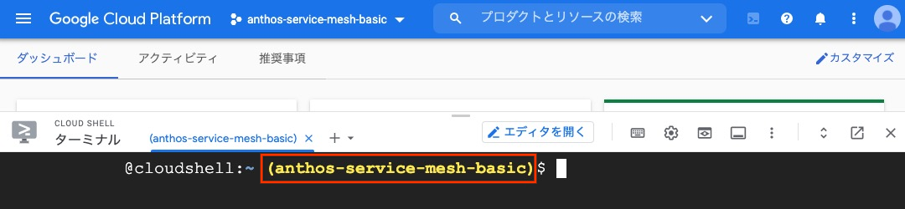
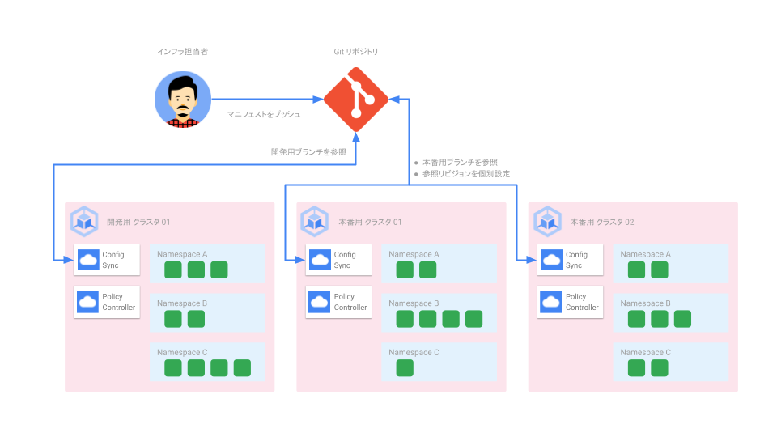
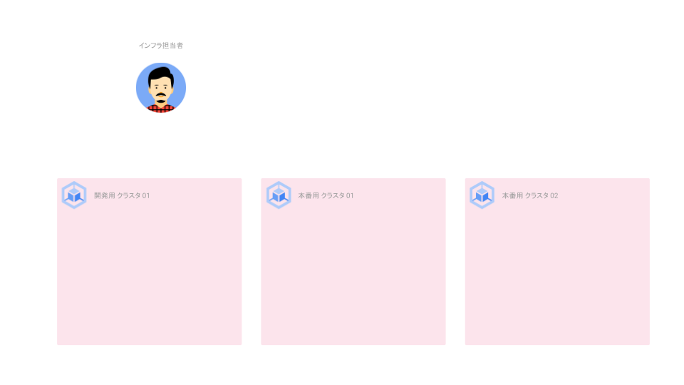
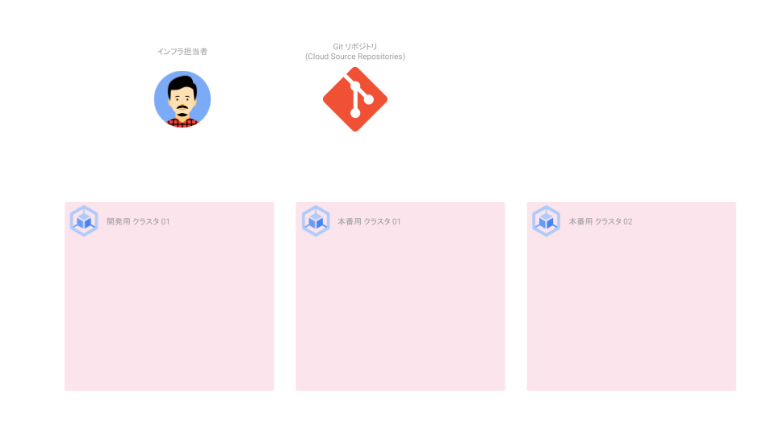
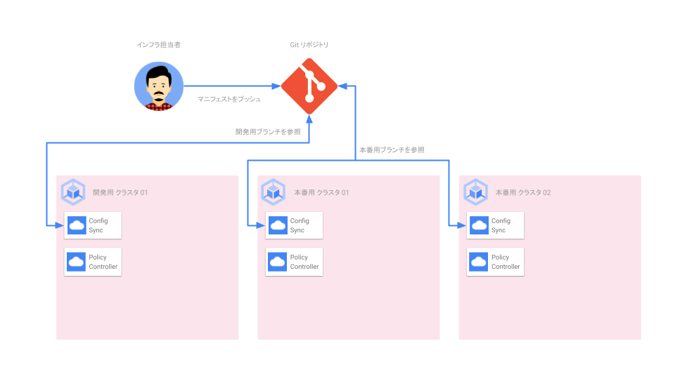
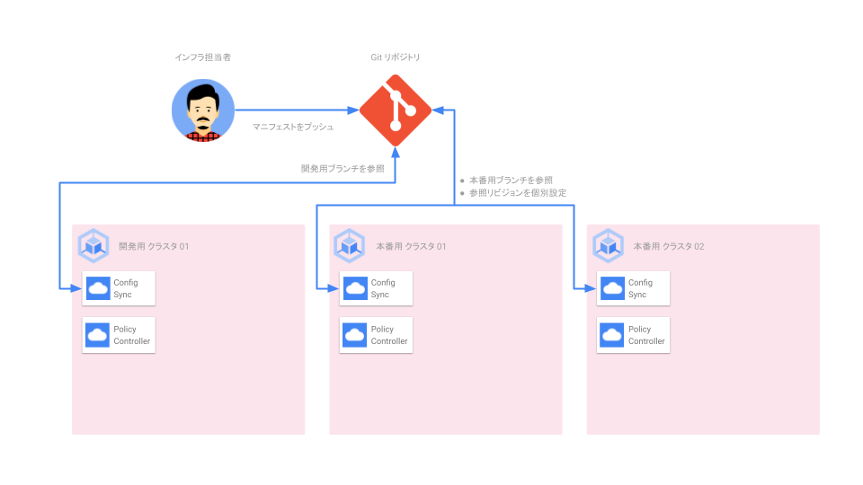
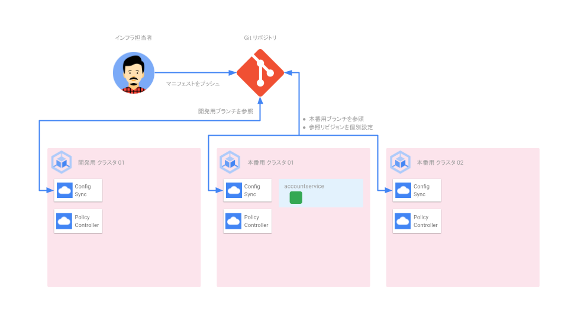
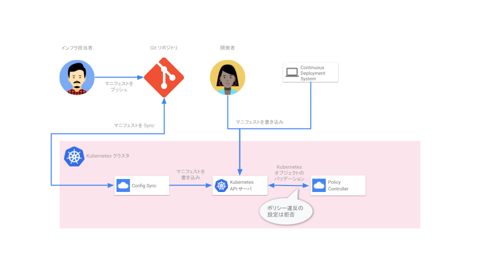

このハンズオンでは Anthos Config Management の導入、設定を通じて基礎的な機能を学習します。
1.1 Anthos Config Management (ACM) とは？
ACM を使うことで以下の 2 つのことが実現できます。
- ハイブリッド、マルチクラウド環境に存在する大規模な Kubernetes 環境を一貫性を持った形で、セキュアに管理する
- Google Cloud のリソース (GKE クラスタ、Spanner インスタンス、VM など) を Kubernetes のマニフェストで作成、管理する (IaC の実現)
1.2 ACM のコンポーネント
ACM は複数のコンポーネントで構成されています。
- Config Sync
- GKE クラスタ上で動作し、1 つ以上の Git リポジトリを監視し、自身のクラスタのあるべき状態を継続的に適用します。
- Policy Controller
- GKE クラスタ上で動作し、クラスタの各種 API 操作に対してポリシーを設定します。
- Config Connector
- GKE クラスタ上で動作し、Kubernetes のリソースモデルを使い、Google Cloud のリソースを作成します。
- Config Controller
- Config Sync, Policy Controller, Config Connector が動作するクラスタをホスト型で提供するマネージドサービスです。
2.1 大規模な Kubernetes 環境を一貫性を持った形でセキュアに管理する

2.2 Google Cloud のリソースを KRM で管理する (IaC の実現)

3.1 利用プロダクト
3.2 前提知識
- Kubernetes の操作、基礎的な Kubernetes リソース (Service, Deployment, Pod) の知識
- Git の基礎的な使い方
3.3 前提条件
本ハンズオンは、Billing が有効な Google Cloud プロジェクトで行うこと、また各種コマンドは Cloud Shell で実行することを前提としています。環境がない場合は、事前に Google Cloud プロジェクトをご用意ください。
4.1 Google Cloud Console へアクセス
Google Cloud コンソール から Google Cloud Console にブラウザでアクセスします。
4.2 Cloud Shell の起動
各種コマンドを実行するための CLI 環境である Cloud Shell を開きます。下図の中のリンクをクリックし、Cloud Shell を開きます。

4.3 Google Cloud プロジェクトの設定
ハンズオンを実行する対象の Google Cloud プロジェクトを設定します。コマンドの XXXXXXXX の部分を実際のプロジェクト ID に置き換えて実行します。プロジェクト ID はダッシュボード画面のプロジェクト情報カードから確認ができます。
export PROJECT_ID=XXXXXXXX
gcloud config set project ${PROJECT_ID}
実行後、確認メッセージがでてきた場合は承認ボタンをクリックします。
コマンド実行後に以下の様に Cloud Shell のプロンプトに、黄色の文字でプロジェクト ID が表示されていることを確認します。

4.4 作業用ディレクトリの作成、移動
ハンズオン用のディレクトリを作成し、そちらに移動します。
export HANDSON_DIR=${HOME}/acm-handson-${PROJECT_ID}
mkdir -p ${HANDSON_DIR} && cd ${HANDSON_DIR}
4.5 ハンズオン利用機能 (API) の有効化
Google Cloud では以下のような各種機能を API として提供しており、Google Cloud プロジェクトの作成直後は、ほぼすべての機能が無効化されております。そのため、使いたい機能は事前に有効化する必要があります。ここではアプリケーションをデプロイする対象の GKE、Config Controller に必要な機能群を有効化します。
gcloud services enable container.googleapis.com \
monitoring.googleapis.com \
cloudtrace.googleapis.com \
clouddebugger.googleapis.com \
cloudprofiler.googleapis.com \
sourcerepo.googleapis.com \
krmapihosting.googleapis.com \
container.googleapis.com \
cloudresourcemanager.googleapis.com \
&& gcloud beta container hub config-management enable
以下のような環境を順を追って構築していきます。

この環境のポイントは以下になります。
- 本番用に 2 つ、開発用に 1 つのクラスタがある
- 本番用、開発用で同じ Git リポジトリを参照する
- 本番用、開発用にブランチを分けて、マニフェストを管理する
- 本番環境では安全性を考慮し Git の更新が即クラスタへの反映にならないようにする
本手順のゴールイメージ

6.1 GKE クラスタ作成
開発環境用の GKE クラスタを 1 つ、本番環境用の GKE クラスタを 2 つ作成します。
for cluster_name in dev-cluster01 prod-cluster01 prod-cluster02
do
gcloud container clusters create ${cluster_name} \
--workload-pool ${PROJECT_ID}.svc.id.goog \
--release-channel regular \
--logging=SYSTEM,WORKLOAD \
--monitoring=SYSTEM \
--machine-type e2-medium \
--zone asia-northeast1-b \
--async
done
Kubernetes Engine から GUI で確認できます。
6.2 クラスタ作成完了まで待機
6.1 のコマンドは非同期実行のためのオプションがついているため、コマンドの成功失敗に関わらず、すぐ結果が返ってきます。
3 つのクラスタの作成が完了し、稼働状態 (RUNNING) になるまで待ちます。
watch -n 5 gcloud container clusters list --format "value\(name,status\)"
すべてのクラスタが RUNNING になったら、Ctrl-C でコマンドを終了させます。
6.2 クラスタ認証情報の取得
Kubernetes の操作には kubectl という CLI を使います。kubectl から作成したクラスタを操作するために認証情報を取得します。
for cluster_name in dev-cluster01 prod-cluster01 prod-cluster02
do
gcloud container clusters get-credentials ${cluster_name} --zone=asia-northeast1-b
done
6.3 クラスタ認証名 (コンテキスト) の簡素化
kubectl では操作対象のクラスタを認証情報も合わせ、コンテキストというもので管理しています。デフォルトでは長いコンテキスト名が付いてしまうため、以降の手順で簡単に指定できるように短い名称に変えます。
kubectl config rename-context gke_${PROJECT_ID}_asia-northeast1-b_dev-cluster01 dev01
kubectl config rename-context gke_${PROJECT_ID}_asia-northeast1-b_prod-cluster01 prod01
kubectl config rename-context gke_${PROJECT_ID}_asia-northeast1-b_prod-cluster02 prod02
6.4 クラスタのフリートへの登録
フリートとはクラスタを論理的に編成するための Google Cloud のコンセプトです。これを使うことでマルチクラスタ機能の使用と管理、複数のシステム間での一貫したポリシーの適用が可能になります。
for cluster_name in dev-cluster01 prod-cluster01 prod-cluster02
do
gcloud container hub memberships register ${cluster_name} \
--gke-cluster=asia-northeast1-b/${cluster_name} \
--enable-workload-identity
done
クラスタに適用する設定 (マニフェスト) は GitOps の形で集中管理します。そこでマニフェストを格納するための Git リポジトリの作成、権限の設定を行います。
本手順のゴールイメージ

7.1 Git リポジトリの作成
マニフェストを格納するための Git リポジトリを Cloud Source Repositories に作成します。
gcloud source repos create acm-repo
7.2 Git リポジトリの準備
作成した Git リポジトリは空になっています。後ほどマニフェストを格納するために main ブランチに README ファイル を作成しておきます。
cd ${HANDSON_DIR} \
&& gcloud source repos clone acm-repo \
&& cd acm-repo \
&& git checkout -b main \
&& echo "# Repository for ACM" > README.md \
&& git add . \
&& git commit -m 'add readme' \
&& git push origin main \
&& cd ..
下記コマンドで出力された URL から GUI にアクセスできます。
echo https://source.cloud.google.com/${PROJECT_ID}/acm-repo/+/main
7.2 Config Sync 用サービスアカウントの作成
Config Sync は Cloud Source Repositories からマニフェストを読み取るために権限が必要です。ここでは専用のサービスアカウントを作成します。
gcloud iam service-accounts create acm-sync \
--description="Service account for Config Sync" \
--display-name="acm-sync"
7.3 作成したサービスアカウントに権限を付与
サービスアカウントは作成しただけでは権限を持っていません。Cloud Source Repositories への読み取り権限を付与します。
gcloud projects add-iam-policy-binding ${PROJECT_ID} \
--member="serviceAccount:acm-sync@${PROJECT_ID}.iam.gserviceaccount.com" \
--role="roles/source.reader"
7.4 Google Cloud サービスアカウントと Kubernetes サービスアカウントの紐付け
Workload Identity を使い、先程作成したサービスアカウントを Config Sync が利用する Kubernetes サービスアカウントと紐付けます。これにより、Config Sync が Cloud Source Repositories にあるマニフェストを読み取ることができるようになります。
gcloud iam service-accounts add-iam-policy-binding \
--role roles/iam.workloadIdentityUser \
--member "serviceAccount:${PROJECT_ID}.svc.id.goog[config-management-system/root-reconciler]" \
acm-sync@${PROJECT_ID}.iam.gserviceaccount.com
本手順のゴールイメージ
8.1 設定ファイルの用意
Config Sync, Policy Controller は設定ファイルを使い、クラスタごとにインストールします。どのような設定ができるかは、gcloud apply spec フィールド をご確認ください。
cd ${HANDSON_DIR} \
&& cat << EOF > apply-spec.yaml
applySpecVersion: 1
spec:
configSync:
# Config Sync の有効化
enabled: true
# Git リポジトリ内のコード形式 (非構造化)
sourceFormat: unstructured
# Sync 対象の Git リポジトリ
syncRepo: https://source.developers.google.com/p/${PROJECT_ID}/r/acm-repo
# Sync 対象のブランチ名
syncBranch: main
# Sync 対象のリビジョン
syncRev: HEAD
# Git リポジトリとの認証方法 (Workload Identity から Service Account を利用)
secretType: gcpserviceaccount
# Service Account のメールアドレスを指定
gcpServiceAccountEmail: acm-sync@${PROJECT_ID}.iam.gserviceaccount.com
# Sync 対象のディレクトリ
policyDir: /
# Config Sync により設定されたリソースの上書きを許可するか (デフォルトは False)
preventDrift: false
policyController:
# Policy Controller の有効化
enabled: true
# 全ての拒否動作と Dryrun での失敗をログ対象とするか (デフォルトは False)
logDeniesEnabled: true
EOF
8.2 Config Sync, Policy Controller のインストール
3 つのクラスタ全てで同じ設定を使い、Config Sync、Policy Controller をインストールします。
for cluster_name in dev-cluster01 prod-cluster01 prod-cluster02
do
gcloud beta container hub config-management apply \
--membership=${cluster_name} \
--config=./apply-spec.yaml
done
8.3 インストール確認
Config Sync, Policy Controller がインストールされ、稼働状態になるまで待ちます。
watch -n 5 gcloud beta container hub config-management status
すべてのクラスタの Status が SYNCED、Policy_Controller が INSTALLED になったら、Ctrl-C でコマンドを終了させます。 Kubernetes Engine - 構成管理 から GUI でも確認できます。
本手順のゴールイメージ

9.1 Sync 対象のディレクトリに移動
cd ${HANDSON_DIR}/acm-repo
9.2 Namespace と権限の作成
accountservice という名前空間、またその名前空間内の Pod を閲覧する権限、それを Google グループに付与する設定を作成します。
cat << EOF > namespace.yaml
---
apiVersion: v1
kind: Namespace
metadata:
name: accountservice
EOF
cat << EOF > accountservice.yaml
---
apiVersion: rbac.authorization.k8s.io/v1
kind: Role
metadata:
namespace: accountservice
name: pod-reader
rules:
- apiGroups: [""]
resources: ["pods"]
verbs: ["get", "watch", "list"]
---
kind: RoleBinding
apiVersion: rbac.authorization.k8s.io/v1
metadata:
name: pod-reader-binding
namespace: accountservice
subjects:
# Google Group
- kind: Group
name: accountservice-ro-group@example.com
roleRef:
kind: Role
name: pod-reader
apiGroup: rbac.authorization.k8s.io
EOF
9.3 Git へのプッシュ
作成した設定ファイルを Git リポジトリにプッシュします。
git add . && git commit -m 'add accountservice.yaml' && git push origin main
9.4 クラスタへのデプロイの確認 (kubectl)
開発用クラスタの名前空間一覧を確認します。accountservice が作成されるまで待ちます。
kubectl get namespace --context dev01 --watch
名前空間 accountservice が作られたら Ctrl-C でコマンドを終了させます。
--context の引数を本番クラスタ (prod01, prod02) の指定に変え、実行してみてください。開発クラスタと同じように名前空間が作られているはずです。
9.5 クラスタへのデプロイの確認 (nomos)
ACM では複数のクラスタを管理する CLI として nomos が用意されています。これを使うことで、複数のクラスタの状況、Config Sync により管理されているリソースを一覧化して見ることができます。
以下のコマンドは、3 クラスタすべての情報を 1 秒おきに表示します。
nomos status --contexts dev01,prod01,prod02 --poll 1s
確認後 Ctrl-C でコマンドを終了させます。
9.6 手動で作成したリソースを削除し、自動で復旧することを確認 (差分の解消)
kubectl delete -f accountservice.yaml --context dev01 \
&& nomos status --contexts dev01,prod01,prod02 --poll 1s
Git で定義されているあるべき状態と、現在の差分が検出され、自動的に修正 (削除したものが再作成) されます。確認後 Ctrl-C でコマンドを終了させます。
9.7 Git リポジトリからリソースを削除、クラスタに反映されることを確認
Git から名前空間を除くリソースを削除します。すべてのクラスタからリソースが削除されることを確認します。
git rm accountservice.yaml && git commit -m 'delete accountservice.yaml' && git push origin main \
&& nomos status --contexts dev01,prod01,prod02 --poll 1s
確認後 Ctrl-C でコマンドを終了させます。
Config Sync ではリソースの誤削除を防ぐため、一度のコミットですべての名前空間、リソースを削除することができないようになっています。そのため、本手順でリソースを、次の手順で名前空間を削除するようにしています。KNV2006: Config Management Erros
9.8 Git リポジトリから名前空間リソースを削除、クラスタに反映されることを確認
Git から名前空間リソースを削除します。すべてのクラスタから名前空間が削除されることを確認します。
git rm namespace.yaml && git commit -m 'delete namespace.yaml' && git push origin main \
&& nomos status --contexts dev01,prod01,prod02 --poll 1s
確認後 Ctrl-C でコマンドを終了させます。
ここまで 3 クラスタすべてが同じ Git リポジトリ、ブランチを参照しており、同じ設定が適用されていました。現実では本番、開発では異なる設定となることがほとんどです。
今回のハンズオンでは Git リポジトリは同じものを参照し、ブランチで本番、開発を区別することとします。
本手順のゴールイメージ

10.1 本番、開発用の設定ファイルを作成
参照するブランチを prod, dev に修正したファイルを作成します。
cd ${HANDSON_DIR}
cat apply-spec.yaml | sed -e 's/syncBranch: main/syncBranch: prod/' -e 's/preventDrift: false/preventDrift: true/' -e '5s/enabled: true/enabled: false/' > apply-spec-prod.yaml
cat apply-spec.yaml | sed -e 's/syncBranch: main/syncBranch: dev/' > apply-spec-dev.yaml
10.2 本番用、開発用の Git ブランチを作成
Git リポジトリにはまだ参照するブランチが作成されていません。prod, dev のブランチを作成します。
cd acm-repo \
&& git checkout -b prod \
&& git push origin prod \
&& git checkout -b dev \
&& git push origin dev \
&& cd ..
10.3 Config Sync の設定変更
先程作成した、本番用、開発用で参照するブランチを分けた設定ファイルを適用します。
本番用クラスタ (Config Sync を一度停止する)
for num in 01 02
do
gcloud beta container hub config-management apply \
--membership=prod-cluster${num} \
--config=./apply-spec-prod.yaml
done
開発用クラスタ
gcloud beta container hub config-management apply \
--membership=dev-cluster01 \
--config=./apply-spec-dev.yaml
注: 本番環境では 構成ファイルのドリフト防止 機能を有効化しようとしています。有効化には一度 Config Sync を止め、再度起動させる必要があります。
10.4 本番環境の Config Sync を再度有効化する
sed -i -e 's/enabled: false/enabled: true' apply-spec-prod.yaml
for num in 01 02
do
gcloud beta container hub config-management apply \
--membership=prod-cluster${num} \
--config=./apply-spec-prod.yaml
done
10. 設定が反映されたことを確認
参照ブランチが変わったことを nomos コマンドで確認します。
nomos status --contexts dev01,prod01,prod02 --poll 1s
確認後 Ctrl-C でコマンドを終了させます。
本番用に 2 クラスタありますが、同じブランチを参照しており、Git リポジトリが更新されるとすぐに設定が反映されます (デフォルトで HEAD が指定されているため)。ここではより安全に参照する リビジョン を指定することで Git リポジトリの更新とは分けて、クラスタ設定を管理します。
本手順のゴールイメージ

11.1 Sync 対象のディレクトリに移動し、本番用クラスタのブランチ (prod) に切り替え
cd ${HANDSON_DIR}/acm-repo && git checkout prod
11.2 今適用されているリビジョン (ハッシュ値) を取得
今 Sync されているリビジョン (HEAD) のハッシュ値を取得します。
REVISION=$(git rev-parse HEAD)
11.3 リビジョンを固定した設定ファイルを作成
リビジョンを固定した設定ファイルを作成します。
cd ${HANDSON_DIR} && cat apply-spec-prod.yaml \
| sed -e "s/syncRev: HEAD/syncRev: ${REVISION}/" \
> apply-spec-prod-rev.yaml
11.4 Config Sync の設定変更
Config Sync の設定を更新し、本番クラスタの参照リビジョンを固定します。
for num in 01 02
do
gcloud beta container hub config-management apply \
--membership=prod-cluster${num} \
--config=./apply-spec-prod-rev.yaml
done
11.5 設定が反映されたことを確認
参照リビジョンが変わったことを nomos コマンドで確認します。
nomos status --contexts prod01,prod02 --poll 1s
確認後 Ctrl-C でコマンドを終了させます。
これで本番用クラスタ 01, 02 が特定のリビジョンに固定されました。こうすることで Git リポジトリに反映された設定をクラスタ個別に反映させることが可能になりました。
本手順のゴールイメージ

12.1 Namespace の作成
productionservice という名前空間を作成します。
cd ${HANDSON_DIR}/acm-repo \
&& cat << EOF > accountservice.yaml
---
apiVersion: v1
kind: Namespace
metadata:
name: accountservice
EOF
12.2 Git へのプッシュ
作成した設定ファイルを Git リポジトリにプッシュします。
git add . && git commit -m 'add accountservice.yaml' \
&& git push origin prod
12.3 最新リビジョン (ハッシュ値) を取得
最新のリビジョン (HEAD) のハッシュ値を取得します。
REVISION=$(git rev-parse HEAD)
12.4 設定ファイルのリビジョンを更新
設定ファイルに記載されている参照リビジョンを更新します。
cd ${HANDSON_DIR} && \
sed -i -e "s/syncRev: .*$/syncRev: ${REVISION}/" apply-spec-prod-rev.yaml
12.5 Config Sync の設定変更 (本番用クラスタ 01)
Config Sync の設定を更新し、本番クラスタ 01 のみ参照リビジョンを固定します。
gcloud beta container hub config-management apply \
--membership=prod-cluster01 \
--config=./apply-spec-prod-rev.yaml \
&& nomos status --contexts prod01,prod02 --poll 1s
本番用クラスタ 01, 02 で異なるリビジョンが適用されることを確認します。確認後 Ctrl-C でコマンドを終了させます。
12.6 手動でのリソース削除
Config Sync で作成されたリソースを手動で削除します。
kubectl delete namespace accountservice --context prod01
Config Sync で管理されているリソースを修正しようとしたので、拒否されるはずです。 これは Config Sync の Admission Webhook により実現されています。
開発用のクラスタでは preventDrift のパラメータが false に設定していたため、手動での操作自体は拒否されず、操作後自動的に修正されていました。
今回は開発、本番の 2 環境、そしてそれぞれの環境は設定が同一という前提で以下の要素を使い、クラスタ設定を制御しました。
- Git ブランチ
- Git リビジョン
Git, Config Sync では上記に加え下記のような要素を使い、クラスタに適用する設定を制御することができます。
また今回は 1 クラスタが参照する Git リポジトリが 1 つでしたが、複数のリポジトリ (正しくは、クラスタ全体設定用に 1 つ、各名前空間ごとに 1 つずつ) を参照するように構成することも可能です。詳しくは 名前空間リポジトリからの同期を構成する をご確認ください。
それぞれの要素の使い分けなどは Anthos Config Management を使用した安全なロールアウト をご確認ください。
Policy Controller とは？
Policy Controller は、Kubernetes の API に対する操作に対しポリシーを設定することができます。
Config Sync により GitOps でリソースの一元管理を実現できましたが、リソースをどのように作るべきか、何を作らせるべきかなどの制限は入っていませんでした。そのような各種制限を設定、そして強制する機能が Policy Controller で「セキュリティガードレール」として機能します。
この機能を利用することで以下のようなことが可能になります。
- リソースの利用者を識別するために、team ラベルの付与を必須とする
- 開発者が default 名前空間を利用するのを禁止する
- Kubernetes のセキュリティベンチマーク CIS Kubernetes Benchmark を適用する

手順 8 で Policy Controller は各クラスタにインストール済みです。その中で自動的に有用なポリシーテンプレートも導入されます。インストールされるテンプレート一覧は 制約テンプレートライブラリ をご確認ください。
ここではそれらのテンプレートを活用して、3 つセキュリティガードレールを追加します。
- 開発用クラスタ
- レプリカ数の上限を設定
- 本番用クラスタ
- default ネームスペースへのアプリケーション作成
- readness Probe, liveness Probe の設定を強制
テンプレートライブラリで提供されている K8sReplicaLimits を利用して、開発用クラスタでのレプリカ数上限を 3 に設定します。
16.1 Sync 対象のディレクトリに移動し、開発用クラスタのブランチ (dev) に切り替え
cd ${HANDSON_DIR}/acm-repo && git checkout dev
16.2 ポリシーを作成
cat << EOF > replica_limit.yaml
apiVersion: constraints.gatekeeper.sh/v1beta1
kind: K8sReplicaLimits
metadata:
name: replica-limits
spec:
enforcementAction: dryrun
match:
kinds:
- apiGroups:
- apps
kinds:
- Deployment
parameters:
ranges:
- max_replicas: 3
EOF
16.3 Git へのプッシュ
作成したポリシーを Git リポジトリにプッシュし、反映を確認します。
git add . && git commit -m 'add replica limit policy for development' && git push origin dev \
&& nomos status --contexts dev01 --poll 1s
反映を確認後 Ctrl-C でコマンドを終了させます。
16.4 レプリカ数を 4 にした Deployment を作成
kubectl create deployment nginx-4 --image nginx --replicas 4 --context dev01
16.5 監査結果の表示
手順 15.3 で作成したポリシーは dryrun モード (enforcementAction 項目) で設定していました。そのためポリシー違反の設定は拒否ではなく、監視されます。ポリシー違反が検出されているかを確認します。
kubectl get K8sReplicaLimits replica-limits -o yaml --context dev01
出力結果の最下部に violations としてポリシー違反の Deployment が表示されていることを確認します。
K8sRectrictNamespaces ポリシーを使うことで、名前空間の利用を制限できます。
ここではサービスで通常利用しないほうが良い default の名前空間の利用を制限します。
17.1 Sync 対象のディレクトリに移動し、本番用クラスタのブランチ (prod) に切り替え
cd ${HANDSON_DIR}/acm-repo && git checkout prod
17.2 ポリシーを作成
cat << EOF > restrict-default-namespace.yaml
apiVersion: constraints.gatekeeper.sh/v1beta1
kind: K8sRestrictNamespaces
metadata:
name: restrict-default-namespace
spec:
match:
kinds:
- apiGroups: ["apps"]
kinds: ["Deployment","Pod","ReplicaSet"]
enforcementAction: deny
parameters:
restrictedNamespaces:
- default
EOF
17.3 Git へのプッシュ
作成したポリシーを Git リポジトリにプッシュします。
git add . && git commit -m 'restrict default namespace for production' \
&& git push origin prod
17.4 今適用されているリビジョン (ハッシュ値) を取得
更新が含まれているリビジョン (HEAD) のハッシュ値を取得します。
REVISION=$(git rev-parse HEAD)
17.5 リビジョンを固定した設定ファイルを作成
リビジョンを固定した設定ファイルを作成します。
cd ${HANDSON_DIR} && cat apply-spec-prod-rev.yaml \
| sed -e "s/syncRev: .*$/syncRev: ${REVISION}/" \
> apply-spec-prod-rev-17.yaml
17.6 本番クラスタ 01 にポリシーを反映
Config Sync の設定を更新し、本番クラスタ 01 にポリシーを反映します。
gcloud beta container hub config-management apply \
--membership=prod-cluster01 \
--config=./apply-spec-prod-rev-17.yaml \
&& nomos status --contexts prod01 --poll 1s
restrict-default-namespace リソースが Sync されたら、Ctrl-C でコマンドを終了させます。
17.7 Deployment を default ネームスペースに作成
kubectl create deployment nginx --image nginx --replicas 4 --context prod01
K8sRequiredProbes ポリシーを使うことで、Pod に readiness Probe または liveness Probe の利用を強制できます。本番用サービスでは、アプリケーションに合わせた Probe を適切に設定することが良いプラクティスです。
ここでは両方の Probe が設定されていない Pod の作成を制限します。
18.1 ポリシーを作成
cd ${HANDSON_DIR}/acm-repo \
&& cat << EOF > must-have-probes.yaml
apiVersion: constraints.gatekeeper.sh/v1beta1
kind: K8sRequiredProbes
metadata:
name: must-have-probes
spec:
enforcementAction: deny
match:
kinds:
- apiGroups:
- ""
kinds:
- Pod
parameters:
probeTypes:
- tcpSocket
- httpGet
- exec
probes:
- readinessProbe
- livenessProbe
EOF
18.2 Git へのプッシュ
作成したポリシーを Git リポジトリにプッシュします。
git add . && git commit -m 'restrict workloads without probes for production' \
&& git push origin prod
18.3 今適用されているリビジョン (ハッシュ値) を取得
更新が含まれているリビジョン (HEAD) のハッシュ値を取得します。
REVISION=$(git rev-parse HEAD)
18.4 リビジョンを固定した設定ファイルを作成
リビジョンを固定した設定ファイルを作成します。
cd ${HANDSON_DIR} && cat apply-spec-prod-rev-16.yaml \
| sed -e "s/syncRev: .*$/syncRev: ${REVISION}/" \
> apply-spec-prod-rev-18.yaml
18.5 本番クラスタ 01 にポリシーを反映
Config Sync の設定を更新し、本番クラスタ 01 にポリシーを反映します。
gcloud beta container hub config-management apply \
--membership=prod-cluster01 \
--config=./apply-spec-prod-rev-18.yaml \
&& nomos status --contexts prod01 --poll 1s
must-have-probes リソースが Sync されたら、Ctrl-C でコマンドを終了させます。
18.6 Probe 設定がない Pod を service1 ネームスペースに作成
kubectl create namespace service1 --context prod01 \
&& kubectl run nginx-without-probes --image nginx -n service1 --context prod01
Config Controller とは？
Config Controller は Google Cloud リソースのプロビジョニングとオーケストレーション (わかりやすく言うと IaC を実現します) を行うホスト型サービスです。本サービスにより、Google Cloud の環境を Kubernetes Resource Model で構築、管理できます。
Config Controller は下記 3 つのコンポーネントで構築されています。
- Config Sync
- Policy Controller
- Config Connector
Config Connector が KRM を Google Cloud のリソースに変換し作成する機能を担っています。Config Sync, Policy Controller により、Google Cloud のリソース管理機能に、GitOps、セキュリティガードレールが追加されています。
20.1 Config Controller を作成
gcloud anthos config controller create config-controller01 \
--location=us-central1 --async
20.2 Config Controller の作成完了を確認
watch -n 5 gcloud anthos config controller list --location us-central1
作成が完了 (STATE が RUNNING) したら、Ctrl-C でコマンドを終了させます。
20.3 Config Controller クラスタ認証情報の取得
Config Controller は GKE クラスタにホストされた形で提供されます。作成したクラスタを CLI (kubectl) から操作するために認証情報を取得します。
gcloud anthos config controller get-credentials config-controller01 \
--location us-central1
20.4 Config Controller に権限を付与
Config Controller は Google Cloud のリソースを作成、管理します。そのため、それらを実行するための権限を付与する必要があります。
export SA_EMAIL="$(kubectl get ConfigConnectorContext -n config-control \
-o jsonpath='{.items[0].spec.googleServiceAccount}' 2> /dev/null)"
gcloud projects add-iam-policy-binding "${PROJECT_ID}" \
--member "serviceAccount:${SA_EMAIL}" \
--role "roles/owner"
Config Controller には Config Sync が含まれており、簡単に GitOps でリソースを管理することができます。
21.1 Config Controller 用 Git リポジトリ用マニフェスト作成
cd ${HANDSON_DIR} \
&& cat << EOF > cc-repo.yaml
apiVersion: sourcerepo.cnrm.cloud.google.com/v1beta1
kind: SourceRepoRepository
metadata:
name: config-controller-repo
namespace: config-control
EOF
21.2 Config Controller 用 Git リポジトリ作成
kubectl apply -f cc-repo.yaml
21.3 Git リポジトリの準備
作成した Git リポジトリは空になっています。後ほどマニフェストを格納するために main ブランチに README ファイル を作成しておきます。
gcloud source repos clone config-controller-repo \
&& cd config-controller-repo \
&& git checkout -b main \
&& echo "# Repository for Config Controller" > README.md \
&& git add . \
&& git commit -m 'add readme' \
&& git push origin main
21.4 GitOps 用の IAM 設定ファイルを作成
cd ${HANDSON_DIR} \
&& cat << EOF > gitops-iam.yaml
apiVersion: iam.cnrm.cloud.google.com/v1beta1
kind: IAMServiceAccount
metadata:
name: config-sync-sa
namespace: config-control
spec:
displayName: ConfigSync
---
apiVersion: iam.cnrm.cloud.google.com/v1beta1
kind: IAMPolicyMember
metadata:
name: config-sync-wi
namespace: config-control
spec:
member: serviceAccount:${PROJECT_ID}.svc.id.goog[config-management-system/root-reconciler]
role: roles/iam.workloadIdentityUser
resourceRef:
apiVersion: iam.cnrm.cloud.google.com/v1beta1
kind: IAMServiceAccount
name: config-sync-sa
---
apiVersion: iam.cnrm.cloud.google.com/v1beta1
kind: IAMPolicyMember
metadata:
name: allow-configsync-sa-read-csr
namespace: config-control
spec:
member: serviceAccount:config-sync-sa@${PROJECT_ID}.iam.gserviceaccount.com
role: roles/source.reader
resourceRef:
apiVersion: resourcemanager.cnrm.cloud.google.com/v1beta1
kind: Project
external: projects/${PROJECT_ID}
EOF
21.5 GitOps 用 IAM 設定の適用
kubectl apply -f gitops-iam.yaml
21.6 Config Sync, Policy Controller 設定ファイルの用意
cat << EOF > apply-spec-config-controller.yaml
apiVersion: configmanagement.gke.io/v1
kind: ConfigManagement
metadata:
name: config-management
spec:
enableMultiRepo: true
enableLegacyFields: true
policyController:
enabled: true
clusterName: krmapihost-config-controller01
git:
policyDir: /
secretType: gcpserviceaccount
gcpServiceAccountEmail: config-sync-sa@${PROJECT_ID}.iam.gserviceaccount.com
syncBranch: main
syncRepo: https://source.developers.google.com/p/${PROJECT_ID}/r/config-controller-repo
sourceFormat: unstructured
EOF
21.7 Config Sync, Policy Controller のインストール
kubectl apply -f apply-spec-config-controller.yaml
21.8 インストール確認
Config Sync, Policy Controller がインストールされ、稼働状態になるまで待ちます。
nomos status --contexts $(kubectl config current-context) --poll 5s
クラスタの状態が SYNCED になったらCtrl-C でコマンドを終了させます。
22.1 Cloud Storage 用設定ファイルの作成 (Tokyo リージョン)
cd ${HANDSON_DIR}/config-controller-repo \
&& cat << EOF > storage-bucket-tokyo.yaml
apiVersion: storage.cnrm.cloud.google.com/v1beta1
kind: StorageBucket
metadata:
annotations:
cnrm.cloud.google.com/force-destroy: "false"
name: ${PROJECT_ID}-bucket-tokyo
namespace: config-control
spec:
storageClass: STANDARD
location: asia-northeast1
versioning:
enabled: true
uniformBucketLevelAccess: true
EOF
22.2 Git へのプッシュ
作成したリソース用マニフェストを Git リポジトリにプッシュします。
git add . && git commit -m 'create a storage bucket in Tokyo' \
&& git push origin main \
&& nomos status --contexts $(kubectl config current-context) --poll 1s
Cloud Storage が作られたら Ctrl-C でコマンドを終了させます。
Cloud Storage 管理画面 から GUI で確認できます。
22.3 Cloud Storage の作成ロケーションを Tokyo リージョンに制限するポリシー作成
cat << EOF > gcs-tokyo-only.yaml
apiVersion: constraints.gatekeeper.sh/v1beta1
kind: GCPStorageLocationConstraintV1
metadata:
name: tokyo-only
spec:
enforcementAction: deny
match:
kinds:
- apiGroups:
- storage.cnrm.cloud.google.com
kinds:
- StorageBucket
parameters:
locations:
- asia-northeast1
EOF
22.4 Git へのプッシュ
作成したポリシーを Git リポジトリにプッシュします。
git add . && git commit -m 'restrict bucket creation only in Tokyo' \
&& git push origin main \
&& nomos status --contexts $(kubectl config current-context) --poll 1s
tokyo-only というポリシーが作られたら Ctrl-C でコマンドを終了させます。
22.5 Cloud Storage 用設定ファイルの作成 (Osaka リージョン)
cat << EOF > storage-bucket-tokyo.yaml
apiVersion: storage.cnrm.cloud.google.com/v1beta1
kind: StorageBucket
metadata:
annotations:
cnrm.cloud.google.com/force-destroy: "false"
name: ${PROJECT_ID}-bucket-osaka
namespace: config-control
spec:
storageClass: STANDARD
location: asia-northeast2
versioning:
enabled: true
uniformBucketLevelAccess: true
EOF
22.6 Git へのプッシュ
作成したリソース用マニフェストを Git リポジトリにプッシュします。
git add . && git commit -m 'create a storage bucket in Osaka' \
&& git push origin main \
&& nomos status --contexts $(kubectl config current-context) --poll 1s
Tokyo リージョンのみ作成可能なポリシーが設定済みなため、作成に失敗しエラーが出力されます。エラーが確認できたら Ctrl-C でコマンドを終了させます。
23.1 大規模な Kubernetes 環境を一貫性を持った形でセキュアに管理する
23.2 Google Cloud のリソースを KRM で管理する (IaC の実現)
環境のクリーンアップを行います。
プロジェクトの削除
最も簡単な方法は Google Cloud プロジェクトごと削除する方法です。
gcloud projects delete ${PROJECT_ID} --quiet